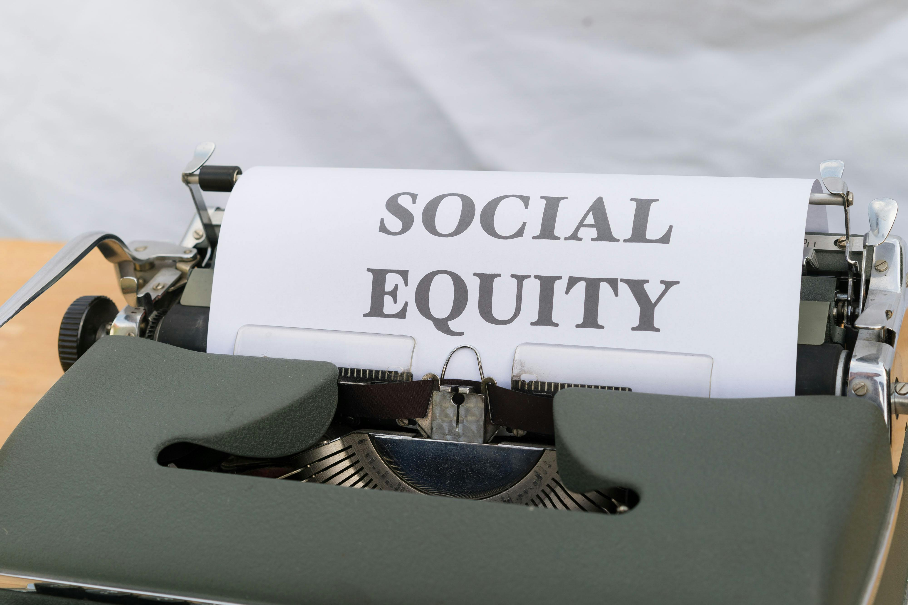

- A successful case study of virtual education can be seen in UNESCO’s efforts to implement Education for Sustainable Development (ESD) through online platforms. These platforms have enabled teachers and students from various countries to access climate change education and engage in sustainability initiatives, despite geographic and economic barriers. The virtual approach fosters global collaboration, allowing diverse stakeholders to share knowledge and best practices, strengthening education systems and supporting climate action worldwide.
- In line with UNESCO's objective of universal primary education by 2030, the UK's EdTech Strategy seeks to increase educational accessibility and efficiency. Digital tool integration in schools improves student achievements, particularly for disadvantaged groups, fosters inclusive learning, and lessens the workload for teachers. In keeping with Sustainable Development Goal 4, this partnership encourages lifelong learning and international cooperation to guarantee fair, high-quality education for everyone.
